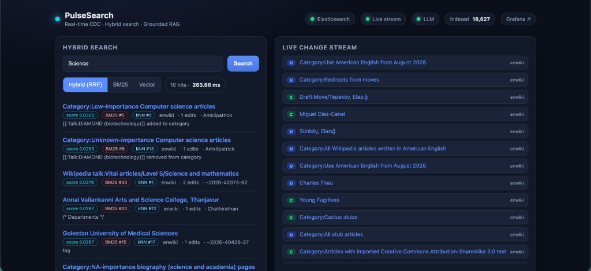
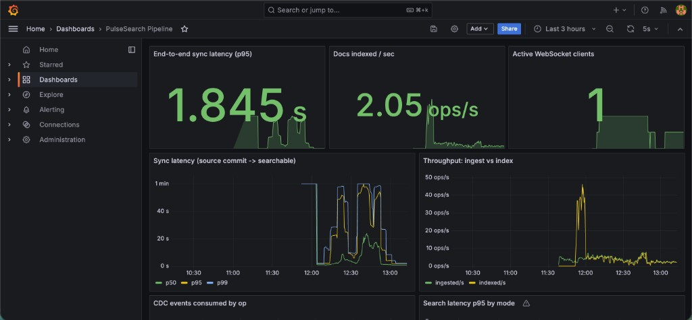
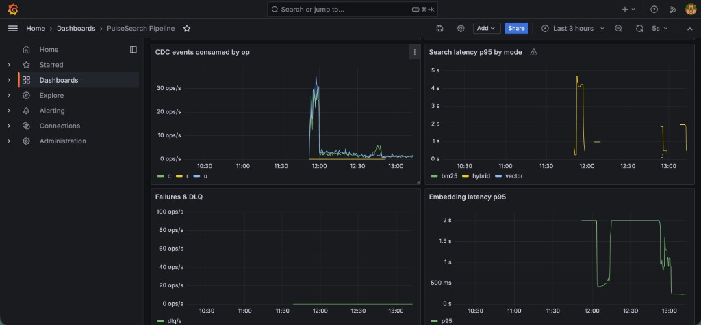

PulseSearch — real-time
CDC search + RAG
An AI-native search system over a live data firehose: change data capture streams every
write from MySQL into Elasticsearch, served as hybrid keyword + vector search and a grounded
RAG assistant on a local LLM — the entire stack runs on one docker compose up,
zero cloud, zero API keys.
The problem
Most "AI search" demos are thin wrappers on a static index. Real products aren't.
In production, the data never stops moving and the index has to keep up: writes land in a database of record, and search has to reflect them within seconds — not overnight — while staying consistent under retries, restarts and out-of-order delivery. On top of that, users increasingly expect semantic relevance and a question-answering assistant that is grounded in the freshest data, not hallucinated.
I wanted to build the whole spine of that system end to end — streaming ingestion, CDC, relevance engineering, real-time fan-out and retrieval-augmented generation — as one coherent, observable pipeline, and prove it with metrics rather than adjectives.
The approach
PulseSearch treats MySQL as the system of record and streams every row change into Elasticsearch, then serves both hybrid search and grounded RAG over that live index. It ingests a real firehose — Wikipedia's live edit stream — so the pipeline is genuinely continuous rather than a seeded demo.
- CDC, not polling — Debezium tails the MySQL binlog and publishes ordered change events to Kafka (Redpanda); a worker embeds each change and upserts it into Elasticsearch.
- Hybrid retrieval with RRF — BM25 and dense-vector kNN result lists are fused in application code with Reciprocal Rank Fusion, keeping it free of paid Elastic tiers and making ranking explicit and tunable.
- Grounded RAG — a local LLM (Ollama) answers strictly from retrieved context, cites sources with timestamps, reports the freshest source, and refuses when retrieval is empty.
- Observable by design — end-to-end "commit → searchable" latency, throughput, and DLQ rate are Prometheus metrics surfaced as p50/p95/p99 in Grafana.
Architecture
One spine from firehose to searchable; Kafka also drives the live dashboard, and FastAPI serves hybrid search + grounded RAG.
In action
Screenshots from a live local run — the product UI recruiters can relate to, plus the Grafana panels that make the pipeline's SLOs and failure modes observable rather than asserted.



The hard parts
Effectively-once indexing on at-least-once delivery
Kafka offsets are committed only after a batch is durably written to Elasticsearch. Upserts are
version-guarded using Debezium's ts_ms as an external monotonic
version (version_type=external_gte), so replays and out-of-order delivery can never
regress a document to an older state.
Replayable backfill & poison-message isolation
Because the change history lives in Kafka, rebuilding the index is a replay from the log, not a database-crushing reindex. Unparseable or repeatedly failing messages are routed to a dead-letter topic instead of wedging the whole stream.
Ranking that's free and explicit
Native RRF retrievers require a paid Elastic tier, so I fuse BM25 and kNN result lists in code
(k = 60). Every hit exposes its BM25 and kNN ranks, making relevance transparent and
tunable rather than a black box.
Grounding the assistant
The RAG endpoint answers only from retrieved context, cites sources with timestamps, reports the
freshest source, and returns grounded: false when retrieval is empty — with an
extractive fallback if the LLM is unavailable, so it's always demonstrable.
Engineering
The codebase is deliberately layered and dependency-inverted so every concern is swappable and
testable: a shared kernel for config / models / embeddings / the ES repository / metrics;
Strategy interfaces behind Protocols for firehose sources, embeddings
and the LLM client; a Repository layer that keeps SQL and query DSL out of business
logic; and an anti-corruption layer that translates Debezium envelopes into clean
domain events. Unit suites cover the shared kernel, the Debezium adapter and the RRF fusion logic
with no external services required.